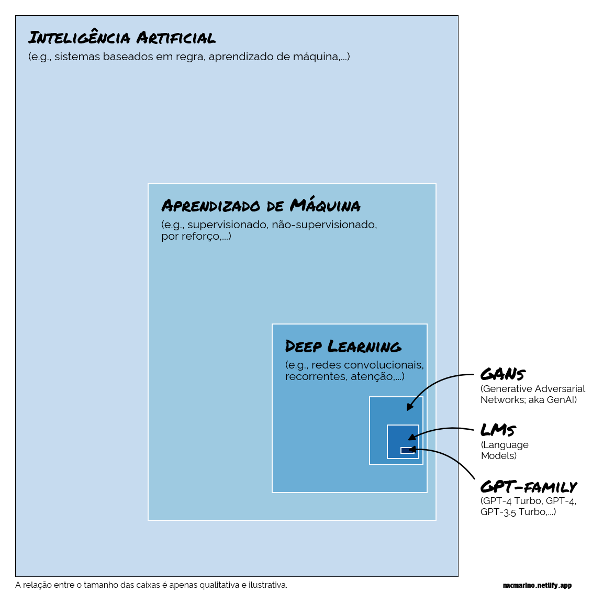
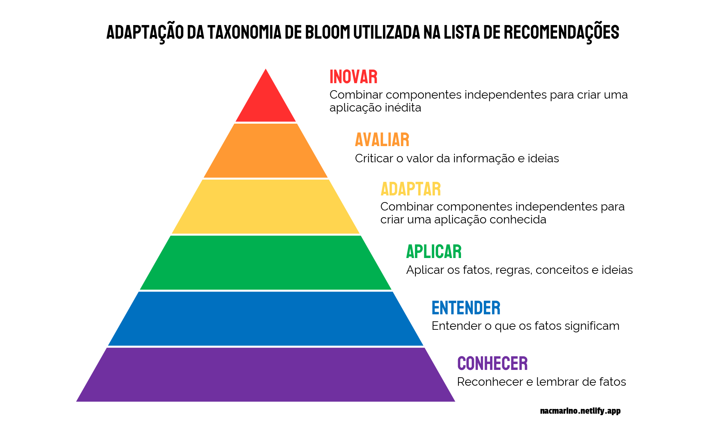

Essa é uma pergunta atualmente relevante, mas cuja resposta pode não ser tão óbvia - ela pode depender do seu propósito, quão fundo você quer ir, quanto tempo você tem e muitos outros aspectos. Nesse post eu trago uma perspectiva sobre essa questão, focando na recomendação de alguns conteúdos que podem ajudar nessa jornada.
# carregando o reticulate para interagir com o Pythonlibrary(reticulate)# criando um ambiente do conda para esse post, caso ele nao existaif(!condaenv_exists(envname ='blog_post_env')){# criando o ambiente do conda que sera usado nessa sessaoconda_create(envname ='blog_post_env', python_version ='3.11')# lendo os pacotes e versoes que precisam ser instaladas no ambiente a partir do requirements.txtrequirements<-read.delim(file ='requirements.txt', header =FALSE)$V1# importando as libs para este postconda_install(envname ='blog_post_env', packages =requirements, pip =TRUE)}# apontando para o ambiente desse postuse_condaenv(condaenv ='blog_post_env')
Uma ideia que sempre me fez muito sentido é a fala da Rainha Vermelha, do conto Alice no País das Maravilhas: ‘…aqui, você vê, é necessário correr o mais rápido que puder para continuar no mesmo lugar. Se você quiser chegar a algum outro lugar, você deve correr pelo menos duas vezes mais rápido do que está fazendo.’. No mundo de Dados, IA e Machine Learning, isso acontece o tempo todo: ciência de dados era a profissão mais sexy na últimadécada…nessa, parece ser a de analista de dados. De forma similar, novas ferramentas e tecnologias surgem todo dia, e é difícil conseguir manter o ritmo e se manter atualizado.
Nessa linha, a hype da vez é IA Generativa (i.e., GenAI), que tomou o mundo desde o ano passado. Se você não vive em uma caverna, deve estar sendo bombardeado com um volume enorme de notícias, informações, aplicações, casos de uso e tudo o mais relacionado à essa nova tecnologia. Inclusive, é possível até que você tenha visto casos em que GenAI esteja sendo adicionado à soluções à qualquer custo - ainda que isso não faça sentido. De qualquer forma, tudo isso pode gerar um medo de ficar de fora e, voltando à Rainha Vermelha, por mais que tentemos nos manter à par de tudo o que está rolando, o volume de novidades e coisas para aprender é alto demais para darmos vazão.
Como uma das inúmeras pessoas que vive esse dilema diariamente, acredito que a primeira ação para mudar um pouco essa perspectiva é aceitar que realmente não há como manter o ritmo de aprendizado. E está tudo bem com isso: afinal, existem muitos outros pratinhos que precisamos equilibrar e prioridades que têm mais valor em nossa vida. A segunda ação é tentar enxergar que volume de informação não é a mesma coisa que qualidade: a maior parte dos conteúdos não vão agregar tanta informação nova, complementar ou que vai ser realmente uma tendência. Assim, se conseguíssemos focar naquilo que têm mais impacto, poderíamos conseguir nos manter dentro de uma zona de conhecimento que talvez seja mais sustentável.1
Assumindo que essa linha de raciocínio faça sentido, voltamos ao problema inicial: têm muita material disponível, e pode ser difícil saber separar o que é útil e o que não é. Ao longo dos últimos meses tenho percebido esse padrão, e colocado um bocado de energia em tentar me manter atualizado e informado sobre o que têm saído. E, durante um tempo, eu achei que estava dando sorte em achar e escolher os conteúdos certos…mas depois o que eu comecei a pensar é que talvez eu esteja em uma posição muito privilegiada de saber distilar o que faz sentido e o que não faz, e priorizar no que focar no tempo que tenho.
Isso me trouxe um questionamento…e se eu estivesse começando hoje a estudar IA Generativa, que jornada eu percorreria? Mais do que isso…nem todo mundo quer ou precisa ser um expert em IA Generativa…pode ser que só saber a ferramenta esteja de bom tamanho, ou ter mais profundidade sobre um assunto específico no tema. Por outro lado, pode ser o caso de querer ter um conhecimento mais abrangente, focando não só em IA Generativa, mas tudo o que está na fundação e por trás disso.
Código
# carregando os pacotes para esse postimport numpy as npimport pandas as pdimport matplotlib.pyplot as pltimport matplotlib.patches as patches# criando um dataframe para armazenar as informacoes que vamos plotar e facilitar o processodf = pd.DataFrame({'id' : ['rect_'+str(i) for i inrange(6)],'position' : [(0, 0), (0.3, 0.1), (0.58, 0.15), (0.8, 0.2), (0.84, 0.21), (0.87, 0.22)],'x' : [1, 0.65, 0.35, 0.12, 0.07, 0.03],'y' : [1, 0.6, 0.3, 0.12, 0.06, 0.01],'texto' : ['Inteligência Artificial', 'Aprendizado de Máquina', 'Deep Learning', np.nan, np.nan, np.nan],'subs' : ['(e.g., sistemas baseados em regra, aprendizado de máquina,...)', '(e.g., supervisionado, não-supervisionado,\npor reforço,...)', '(e.g., redes convolucionais,\nrecorrentes, atenção,...)', np.nan, np.nan, np.nan],'linecolor': ['black', 'white', 'white', 'white', 'white', 'white'],'linesize' : [1, 0.7, 0.7, 0.7, 0.7, 0.7],'rectfill' : ['#C6DBEF', '#9ECAE1', '#6BAED6', '#4292C6', '#2171B5', '#08306B'],'texto_x' : [0.03, 0.33, 0.61, 0.63, np.nan, np.nan],'texto_y' : [0.95, 0.65, 0.4, 0.35, np.nan, np.nan],'sub_x' : [0.03, 0.33, 0.61, np.nan, np.nan, np.nan],'sub_y' : [0.92, 0.6, 0.35, np.nan, np.nan, np.nan]})# criando um dicionario para definir a fonte associada à maior parte dos textosfonte = {'size': 12, 'weight': 'bold', 'family': 'Permanent Marker'}subs = {'size': 8, 'family': 'Raleway'}# criando o canvas da figurafig, ax = plt.subplots(nrows =1, ncols =1, figsize = (6, 6))# criando uma lista vazia para armazenar cada um dos retangulos criados no looprects = []# criando cada um dos retângulos através de um loopfor row in df.itertuples(index =False): rects.append(patches.Rectangle( xy = row.position, width = row.x, height = row.y, linewidth = row.linesize,edgecolor = row.linecolor, facecolor = row.rectfill) )if row.texto isnot np.nan: plt.text(x = row.texto_x, y = row.texto_y, s = row.texto, color ='black', fontdict = fonte) plt.text(x = row.sub_x, y = row.sub_y, s = row.subs, color ='black', fontdict = subs)# adicionando cada um dos retângulos em um loop através da listafor rect in rects: ax.add_patch(rect)# adicionando anotações na lateral direita do plotax.annotate(text ='GANs', xy = (1.05, 0.35), fontsize =12, fontweight ='bold', annotation_clip =False, family ='Permanent Marker')ax.annotate(text ='(Generative Adversarial\nNetworks; aka GenAI)', xy = (1.05, 0.31), fontsize =7, annotation_clip =False, family ='Raleway')ax.annotate(text ='', xy = (0.88, 0.29), xytext = (1.04, 0.36), xycoords ='data', arrowprops =dict(arrowstyle ='-|>', color ='black', lw =1, connectionstyle ="arc3,rad=0.3"))ax.annotate(text ='LMs', xy = (1.05, 0.25), fontsize =12, fontweight ='bold', annotation_clip =False, family ='Permanent Marker')ax.annotate(text ='(Language\nModels)', xy = (1.05, 0.21), fontsize =7, annotation_clip =False, family ='Raleway')ax.annotate(text ='', xy = (0.88, 0.24), xytext = (1.04, 0.26), xycoords ='data', arrowprops =dict(arrowstyle ='-|>', color ='black', lw =1, connectionstyle ="arc3,rad=0.2"))ax.annotate(text ='GPT-family', xy = (1.05, 0.15), fontsize =12, fontweight ='bold', annotation_clip =False, family ='Permanent Marker')ax.annotate(text ='(GPT-4 Turbo, GPT-4,\nGPT-3.5 Turbo,...)', xy = (1.05, 0.11), fontsize =7, annotation_clip =False, family ='Raleway')ax.annotate(text ='', xy = (0.88, 0.225), xytext = (1.04, 0.17), xycoords ='data', arrowprops =dict(arrowstyle ='-|>', color ='black', lw =1, connectionstyle ="arc3,rad=0.3"))# adicionando anotações na parte de baixo da figuraax.annotate(text ='A relação entre o tamanho das caixas é apenas qualitativa e ilustrativa.', xy = (0, -0.02), fontsize =6, annotation_clip =False, family ='Raleway')ax.annotate(text ='nacmarino.netlify.app', xy = (1.1, -0.02), fontsize =6, ha ='left', annotation_clip =False, family ='Passion One')# removendo os completamente as informações dos eixos da figura ax.set_axis_off()fig.patch.set_facecolor('white')# plotando a figuraplt.tight_layout()plt.show()

Apesar de parecer que IA Generativa e Language Models são uma coisa por si só, na realidade, eles são um dos componentes e campos do conhecimento de algo muito maior - e que fornece todas as bases teóricas para podemos entender no detalhe como funcionam e fazem o que fazem. No entanto, uma pessoa não precisa dominar toda essa hierarquia de conhecimento para atuar com IA Generativa - os focos e jornadas de aprendizado são individuais, e é perfeitamente possível pular alguns desses níveiss dependendo do seu objetivo.
Nota sobre a figura
A figura acima abstrai um pouco algumas complexidades de se colocar àquelas áreas do conhecimento em caixinhas. Por exemplo, os (Large) Language Models combinam alguma coisa de Redes Generativas Adversariais, arquitetura de Transformers e aprendizagem por reforço (além de outras áreas do conhecimento como, por exemplo, linguística). Ficaria bem difícil representar toda essa sobreposição em uma imagem em 2D, então optei pelo caminho mais simples para facilitar a compreensão da mensagem principal. De toda forma, achei relevante ter esse disclaimer aqui.
Essas questões me levaram a pensar em por quê não criar uma lista que consolide uma jornada de aprendizado em IA Generativa. Talvez uma lista mais genérica, que possa servir tanto de guia para quem só está interessado em ter contexto, quanto para quem quiser percorrer uma jornada de aprendizado mais longa e profunda. O intuito não é ter a lista definitiva ou a lista certa, nem nada disso…mas talvez uma lista que tenha um sentido lógico e uma cadência, que não seja nada muito complexo ou que vá exigir foco contínuo por muito tempo…e, mais importante, que seja flexível o suficiente para a maior parte dos objetivos de aprendizado.
Considerações sobre as recomendações
É desafiador fazer uma lista como essa, então queria deixar alguns disclaimers importantes aqui:
Todos os recursos que vou listar aqui são conteúdos que eu li, assisti, experimentei e/ou acompanho, e posso dizer que, para mim, funcionou. Pode ser que não seja o caso para você mas, novamente, meu intuito não é trazer uma verdade absoluta, só um ponto de vista mesmo;
Se você discordar ou der falta de algum ponto ou conteúdo é só me sugerir, que vou experimentar, avaliar e colocar aqui se tiver sentido com a jornada maior;
Muitos dos materiais que tive acesso estão em inglês, e sei que isso pode ser uma barreira para muita gente. Muitos desses recursos tem legendas e tudo o mais, mas acho que ainda existe um gap considerável de conteúdos sobre IA Generativa traduzidos para o português. Se você tiver conhecimento de material traduzido ou estiver a fim de criar um, me avisa, pois acredito que tenha interesse em contribuir com isso;
Outro ponto importante é que a lista de recomendações foca em conteúdos *que não dependem de uma self-paced, que não depende de um horário marcado ou algo do gênero para você acompanhar (e.g., aulas online, lives não gravadas e etc). Por conta disso, tive que deixar de fora cursos bastante legais e úteis, como o de Deep Learning do pessoal da Curso-R. Se você quiser recomendações dessa natureza, é só me procurar;
Meu foco aqui foi criar uma lista de recomendações cujo objetivo final é trazer mais entendimento sobre IA Generativa, e não necessariamente sobre Machine Learning, Estatístico ou Data Science. Ainda assim, considerei um ou outro conteúdo relacionado aos três últimos temas para ajudar a trazer mais clareza e compreensão sobre os detalhes técnicos associados à IA Generativa para quem estiver interessado. De toda forma, certamente haveriam outros conteúdos nessa lista caso o foco fosse qualquer um daqueles outros três temas;
Minha intenção vai ser manter essa lista atualizada, conforme eu mesmo for avançando nos meus estudos, amadurecendo o conhecimento, e novos e melhores conteúdos forem sendo lançados;
Um último ponto importante é que a colocar a mão na massa sempre vai ser um importante método de aprendizado. Portanto, apesar das minhas recomendações serem focadas em cursos e outros conteúdos teóricos, não deixe de encontrar alguma forma de praticar.
Como estruturei essa jornada?
Uma vez que IA Generativa, (Large) Language Models e tudo o mais é parte de algo muito maior e que é possível existir diferentes objetivos de aprendizado, resolvi estruturar a lista de recomendações fazendo uma adaptação da taxonomia dos objetivos educacionais de Bloom. A ideia principal desse arcabouço é que a capacidade de compreensão sobre um tema vai se aprofundando através de uma hierarquia de domínio cognitivo, partindo de um ponto em que um indíviduo apenas lembra de uma informação até o ponto em que ele é capaz de criar coisas novas a partir da combinação de informações e ideias distintas. Acredito que isso representa bem uma jornada de aprendizado e, como o próprio arcabouço trás, cada um dos níveis desta hierarquia pode ser descrito através de um verbo que deve definir o resultado principal obtido ali.
Código
# criando um conjunto de dados que sera usado para criar a figuradf = pd.DataFrame({'objetivo' : ['Conhecer', 'Entender', 'Aplicar', 'Adaptar', 'Avaliar', 'Inovar'],'descricao': ['Reconhecer e lembrar de fatos','Entender o que os fatos significam','Aplicar os fatos, regras, conceitos e ideias','Combinar componentes independentes para\ncriar uma aplicação conhecida','Criticar o valor da informação e ideias','Combinar componentes independentes para criar uma\naplicação inédita' ],'cores' : ['#7030A0', '#0070C0', '#00B050', '#FFD54F', '#FF9933', '#FF2F2F']})# criando dicionarios para definir o estilo dos textos da figuraobjetivo_dict = {'size': 20, 'weight': 'bold', 'family': 'Staatliches'}descricao_dict = {'size': 12, 'family': 'Raleway'}# criando o canvas da figurafig, ax = plt.subplots(nrows =1, ncols =1, figsize = (10, 6))# criando os pontos que marcam os limites inferiores e superiores do trapezio no# eixo xx_left_min, x_right_min = np.arange(1, 4, 0.5), np.arange(7, 4, -0.5)x_left_max, x_right_max = np.arange(1.5, 4.5, 0.5), np.arange(6.5, 3.5, -0.5)# criando os pontos que marcam os limites inferiores e superiores do trapezio no# eixo yy_min, y_max =range(0, 6), range(1, 7)# iterando entre as coordenadas para criar cada um dos trapezios e o triangulofor x1_min, x2_min, x2_max, x1_max, y1, y2, cor inzip(x_left_min, x_right_min, x_right_max, x_left_max, y_min, y_max, df.cores.values):# consolidando a lista de coordenadas do trapezio no eixo x - x1 é a parte de# baixo do trapezio e x2 é a parte de cima, min é o que está à esquer e o max# é o que está à direita x = [x1_min, x2_min, x2_max, x1_max]# consolidando a lista de coordenadas com a altura dos trapezios, onde o y1 # representa a altura da parte de baixo e o y2 o da parte de cima y = [y1, y1, y2, y2]# criando um trapezio ou triangulo coloridos ax.add_patch(patches.Polygon(xy =list(zip(x,y)), fill =True, color = cor, edgecolor ='black'))# criando a mesma figura geometrica, mas dessa vez sem cor e com a borda branca ax.add_patch(patches.Polygon(xy =list(zip(x,y)), fill =False, edgecolor ='white', linewidth =2))# criando uma lista de valores para definir as coordenadas dos textos que descritivosy_title = np.arange(0.7, 6)y_text = np.arange(0.4, 6)x_text = np.arange(7, 4.9, -0.4)# iterando entre os textos que queremos escrever e as coordenadas de onde os textos# estarão para escrever ele num loop - tanto o verbo quando a descriçãofor title_height, text_height, position, objetivo, descricao, cor inzip(y_title, y_text, x_text, df.objetivo, df.descricao, df.cores): ax.text(x = position, y = title_height if'\n'in descricao else title_height -0.12, s = objetivo, fontdict = objetivo_dict, color = cor) ax.text(x = position, y = text_height -0.2if'\n'in descricao else text_height -0.1, s = descricao, fontdict = descricao_dict)# adicionando a identidade visual na figura geradaax.annotate(text ='nacmarino.netlify.app', xy = (8.3, -0.2), fontsize =10, ha ='left', annotation_clip =False, family ='Passion One')# removendo os completamente as informações dos eixos da figura ax.set_axis_off()fig.patch.set_facecolor('white')## ajustando os limites da figura no eixo x e no eixo yax.set_xlim([0, 10]);ax.set_ylim([0, 7]);# adicionando um titulo para a figuraax.annotate(text ='Adaptação da Taxonomia de Bloom utilizada na lista de recomendações', xy = (1.5, 6.5), annotation_clip =False, fontsize =20, family ='Staatliches')# plotando a figuraplt.tight_layout()plt.show()

Jornada sugerida
A lista de sugestões está organizada principalmente ao redor daquela adaptação da taxonomia de Bloom.Aalguns conteúdos que sugiro se encaixam em mais de um dos níveis da taxonomia de Bloom, mas na maior parte dos casos decidi usar aquele em que tenho mais confiança que deve ajudar a atingir um determinado nível conhecimento. Além disso, adicionei algumas outras informações para deixar mais claro quanto esforço cada conteúdo demanda (em termos de tempo de dedicação) bem como o tipo de conteúdo (i.e., curso, especialização, livro,…) e o foco central de cada conteúdo (i.e., GenAI, fundação de aprendizado de máquina [ML], fundação de deep learning [DL]). Em algum ponto considerei definir uma sequência explícita, mas desisti dessa ideia depois de pensar que o que funciona para cada um é diferente. Vamos à lista.
Código
# importando pacotes do R para a visualização abaixolibrary(tidyverse)library(gt)# criando o conjunto de dados e a tabela interativedf<-tribble(~fornecedor , ~material , ~foco , ~tipo , ~momento , ~duracao , ~link,'Coursera' , 'Generative AI for Everyone' , 'GenAI' , 'Curso' , 'remember' , 'Horas' , 'https://www.coursera.org/learn/generative-ai-for-everyone' , 'Coursera' , 'Generative AI with Large Language Models' , 'GenAI' , 'Especialização', 'remember' , 'Dias' , 'https://www.coursera.org/learn/generative-ai-with-llms' ,'DeepLearning.ai', 'Understanding and Applying Text Embeddings' , 'DL' , 'Curso' , 'understand', 'Horas' , 'https://www.deeplearning.ai/short-courses/google-cloud-vertex-ai/' , 'DeepLearning.ai', 'ChatGPT Prompt Engineering for Developers' , 'GenAI' , 'Curso' , 'understand', 'Horas' , 'https://www.deeplearning.ai/short-courses/chatgpt-prompt-engineering-for-developers/' , 'DeepLearning.ai', 'Building Systems with the ChatGPT API' , 'GenAI' , 'Curso' , 'understand', 'Horas' , 'https://www.deeplearning.ai/short-courses/building-systems-with-chatgpt/' , 'DeepLearning.ai', 'Open Source Models with Hugging Face' , 'ML' , 'Curso' , 'apply' , 'Horas' , 'https://www.deeplearning.ai/short-courses/open-source-models-hugging-face/' , 'DeepLearning.ai', 'Evaluating and Debugging Generative AI Models Using Weights and Biases' , 'GenAI' , 'Curso' , 'evaluate' , 'Horas' , 'https://www.deeplearning.ai/short-courses/evaluating-debugging-generative-ai/' , 'DeepLearning.ai', 'Finetuning Large Language Models' , 'GenAI' , 'Curso' , 'create' , 'Horas' , 'https://www.deeplearning.ai/short-courses/finetuning-large-language-models/' , 'DeepLearning.ai', 'Large Language Models with Semantic Search' , 'GenAI' , 'Curso' , 'apply' , 'Horas' , 'https://www.deeplearning.ai/short-courses/large-language-models-semantic-search/' , 'DeepLearning.ai', 'LangChain for LLM Application Development' , 'GenAI' , 'Curso' , 'understand', 'Horas' , 'https://www.deeplearning.ai/short-courses/langchain-for-llm-application-development/' , 'DeepLearning.ai', 'LangChain: Chat with Your Data' , 'GenAI' , 'Curso' , 'apply' , 'Horas' , 'https://www.deeplearning.ai/short-courses/langchain-chat-with-your-data/' , 'DeepLearning.ai', 'Preprocessing Unstructured Data for LLM Applications' , 'GenAI' , 'Curso' , 'understand', 'Horas' , 'https://www.deeplearning.ai/short-courses/preprocessing-unstructured-data-for-llm-applications/' , 'DeepLearning.ai', 'Serverless LLM Apps Amazon Bedrock' , 'GenAI' , 'Curso' , 'analyze' , 'Horas' , 'https://www.deeplearning.ai/short-courses/serverless-llm-apps-amazon-bedrock/' , 'DeepLearning.ai', 'How Diffusion Models Work' , 'GenAI' , 'Curso' , 'understand', 'Horas' , 'https://www.deeplearning.ai/short-courses/how-diffusion-models-work/' ,'DeepLearning.ai', 'Quantization Fundamentals' , 'DL' , 'Curso' , 'understand', 'Horas' , 'https://www.deeplearning.ai/short-courses/quantization-fundamentals-with-hugging-face/' ,'Coursera' , 'Machine Learning' , 'ML' , 'Especialização', 'understand', 'Semanas', 'https://www.coursera.org/specializations/machine-learning-introduction' ,'Coursera' , 'Deep Learning' , 'DL' , 'Especialização', 'understand', 'Meses' , 'https://www.coursera.org/specializations/deep-learning' ,'Coursera' , 'Natural Language Processing' , 'ML/DL' , 'Especialização', 'apply' , 'Semanas', 'https://www.coursera.org/specializations/natural-language-processing' ,'Coursera' , 'Generative Adversarial Networks' , 'DL/GenAI', 'Especialização', 'apply' , 'Semanas', 'https://www.coursera.org/specializations/generative-adversarial-networks-gans' ,'Coursera' , 'AI for Medicine' , 'ML/DL' , 'Especialização', 'analyze' , 'Semanas', 'https://www.coursera.org/specializations/ai-for-medicine' ,'DeepLearning.ai', 'Building Generative AI Applications with Gradio' , 'GenAI' , 'Curso' , 'analyze' , 'Horas' , 'https://www.deeplearning.ai/short-courses/building-generative-ai-applications-with-gradio/' ,'d2l.ai' , 'Dive into Deep Learning' , 'DL/GenAI', 'Livro' , 'understand', 'Semanas', 'https://www.d2l.ai/index.html' ,'3Blue1Brown' , 'Neural Networks' , 'DL/GenAI', 'Video' , 'remember' , 'Horas' , 'https://www.youtube.com/watch?v=aircAruvnKk&list=PLZHQObOWTQDNU6R1_67000Dx_ZCJB-3pi&pp=iAQB' ,'Andrej Karpathy', 'Intro to Large Language Models' , 'GenAI' , 'Video' , 'understand', 'Horas' , 'https://www.youtube.com/watch?v=zjkBMFhNj_g' ,"O'Reilly" , 'Designing Machine Learning Systems' , 'ML' , 'Livro' , 'understand', 'Semanas', 'https://www.oreilly.com/library/view/designing-machine-learning/9781098107956/' ,'DeepLearning.ai', 'AI Python for Beginners: Basics of AI Python Coding' , 'Python' , 'Curso' , 'remember' , 'Horas' , 'https://www.deeplearning.ai/short-courses/ai-python-for-beginners/' ,'3Blue1Brown' , 'Large Language Models explained briefly' , 'GenAI' , 'Video' , 'remember' , 'Minutos', 'https://www.youtube.com/watch?v=LPZh9BOjkQs' ,'3Blue1Brown' , 'Transformers (how LLMs work) explained visually' , 'GenAI' , 'Video' , 'understand', 'Minutos', 'https://www.youtube.com/watch?v=wjZofJX0v4M&list=PLZHQObOWTQDNU6R1_67000Dx_ZCJB-3pi&index=6&pp=iAQB','3Blue1Brown' , 'Attention in transformers, visually explained' , 'GenAI' , 'Video' , 'understand', 'Minutos', 'https://www.youtube.com/watch?v=eMlx5fFNoYc&list=PLZHQObOWTQDNU6R1_67000Dx_ZCJB-3pi&index=7&pp=iAQB','3Blue1Brown' , 'How might LLMs store facts' , 'GenAI' , 'Video' , 'understand', 'Minutos', 'https://www.youtube.com/watch?v=9-Jl0dxWQs8&list=PLZHQObOWTQDNU6R1_67000Dx_ZCJB-3pi&index=8&pp=iAQB','Springer' , 'An Introduction to Statistical Learning' , 'ML' , 'Livro' , 'understand', 'Semanas', 'https://www.statlearning.com/')# tabela com a ordem dos objetivos para facilitar organização da tabeladf_ordem<-tribble(~momento , ~ordem, ~objetivo ,'remember' , 6L , 'Conhecer','understand', 5L , 'Entender','apply' , 4L , 'Aplicar' ,'analyze' , 3L , 'Adaptar', 'evaluate' , 2L , 'Criticar','create' , 1L , 'Inovar')# consolidando uma tabela com todas as informações necessarias para criar a tabeladf_temp<-df%>%left_join(y =df_ordem, by ='momento')%>%mutate( objetivo =fct_reorder(.f =objetivo, .x =ordem), duracao =fct_relevel(.f =duracao, 'Horas', 'Dias', 'Semanas', 'Meses'), link =sprintf('<p><a href="%s">Link</a></p>', link), link =map(link, gt::html))%>%select(objetivo, material, foco, tipo, fornecedor, duracao, link)%>%arrange(objetivo, duracao, material)# criando a tabela com recomendacoesdf_temp%>%group_by(objetivo)%>%gt()%>%# renomeando as colunascols_label( material ='Título', tipo ='Tipo', fornecedor ='Fornecedor', duracao ='Duração', link ='Link', foco ='Foco')%>%# editando estilo do texto e borda dos nomes das colunastab_style( style =list(cell_text(weight ='bold', align ='center', size =px(14)), cell_borders(sides ='bottom', color ='grey40')), locations =cells_column_labels())%>%# colocando uma linha para separar as linhas de cada grupotab_style( style =cell_borders(color ='grey40', sides ='bottom'), locations =cells_body(rows =count(df_temp, objetivo)%>%pull(n)%>%cumsum))%>%# colocando o nome dos materiais em negrito tab_style( style =cell_text(weight ='bold', size =px(12)), locations =cells_body(columns =material))%>%# centralizando o texto da duracao, tipo de material, fornecedor e link centralizadostab_style( style =cell_text(align ='center', size =px(12)), locations =cells_body(columns =c(foco, duracao, tipo, fornecedor, link)))%>%# ordenando os grupos da tabela de acordo com a taxonomia de bloomrow_group_order(groups =rev(c('Conhecer', 'Entender', 'Aplicar', 'Adaptar', 'Criticar', 'Inovar')))%>%# definindo um estilo comum para a coluna que contem as informacoes do grupotab_style( style =list(cell_text(color ='white', align ='center', v_align ='middle', weight ='bold'), cell_borders(sides =c('top', 'bottom'), color ='grey40')), locations =cells_row_groups())%>%# estilizando cada uma das colunas de grupotab_style( style =cell_fill(color ='#7030A0'), locations =cells_row_groups(groups ='Conhecer'))%>%tab_style( style =cell_fill(color ='#0070C0'), locations =cells_row_groups(groups ='Entender'))%>%tab_style( style =cell_fill(color ='#00B050'), locations =cells_row_groups(groups ='Aplicar'))%>%tab_style( style =cell_fill(color ='#FFD54F'), locations =cells_row_groups(groups ='Adaptar'))%>%tab_style( style =cell_fill(color ='#FF9933'), locations =cells_row_groups(groups ='Criticar'))%>%tab_style( style =cell_fill(color ='#FF2F2F'), locations =cells_row_groups(groups ='Inovar'))%>%# passando a coluna do grupo de uma linha para uma coluna em sitab_options(row_group.as_column =TRUE)%>%# customizando outros aspectos da tabela, como linhas e fontesopt_table_lines('none')%>%opt_table_font(font =google_font('Raleway'))%>%#tab_footnote(footnote =html('<p align="right">nacmarino.netlify.app</p>'))%>%tab_style( style =cell_text(font =google_font("Passion One"), size =px(12)), locations =cells_footnotes())
Mais uma vez, a jornada de aprendizado e as coisas que funcionam variam de pessoa para pessoa, e meu propósito aqui não é definir uma lista de recomendações absoluta. Mas acredito que referências são importantes para termos um ponto de partida e não gastarmos tempo que muitas vezes não temos. Dúvidas, sugestões e críticas? É só me procurar!
A imagem de capa desse post foi gerada por uma IA Generativa, disponibilizada através do ideogram.ai. Como toda ferramenta dessa natureza, ela é passível de falhas e podemos reparar que ela cometeu alguns pequenos erros na redação da frase que aparece na figura - esse é um dos exemplos que mostra que essa tecnologia não é perfeita. De uma forma ou de outra, para gerá-a, utilizei o prompt: A captivating and futuristic portrait of the Red Queen as an intricately designed robot, running gracefully through an enchanting landscape. She is adorned in her signature real attire, with a crown adorned with a striking red gemstone. Her metallic body showcases the gears and wires that reveal her mechanical nature. The background is a seamless blend of Victorian and steampunk elements, featuring dreamlike landscapes and machinery that lend an air of mystique. There is a phrase written in a clear bold text displayed on the image, which reads: “It takes all the running you can do, to keep in the same place.”
Código
# deletando o ambiente que usei para criar especificamente esse postconda_remove(envname ='blog_post_env')
Sei que isso pode parecer conformismo ou falta de vontade de se esforçar, mas meu ponto de vista é que existem inúmeras formas de se chegar no mesmo lugar…a escolha entre elas vai depender de quanto tempo você tem e quão rápido você quer percorrer esse caminho.↩︎
![]()